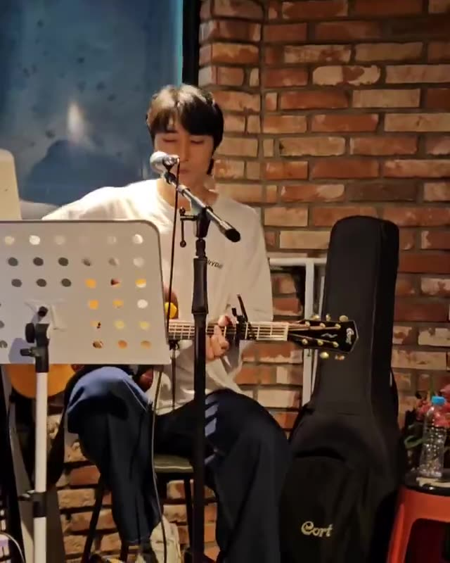

서울에서 매일 라이브 공연이 있는 와인바
서울에서 매일 라이브 공연을 하는 와인바를 찾으신다면, 을지로 행2PM8PM은 365일 하루도 쉬지 않고 2층 무대에서 라이브 공연을 엽니다. 관람료와 입장료는 없고, 주문하신 손님은 누구나 무대 바로 앞에서 공연을 보실 수 있습니다. 외국 재즈 보컬과 국내 인디 뮤지션이 번갈아 무대에 오릅니다.
- 365일 매일 공연
- 관람료 0원
- 재즈 · 인디
- 데이트
- 혼술 환영

요일별 공연 시간
| 요일 | 시작 |
|---|---|
| 월 · 화 · 수 · 목 | 20:00 |
| 금요일 | 1부 19:30 · 2부 21:00 |
| 토요일 | 1부 19:00 · 2부 21:00 |
| 일요일 | 19:00 |
2026 크리스마스 연휴(12/24~12/27)에는 낮 1시 · 3시 · 5시 · 7시 · 9시, 하루 다섯 번 공연합니다. 좌석은 선착순으로 마감됩니다.
이렇게 많이 오십니다
- 연인 데이트2층은 무대와 테이블이 가까워 라이브를 바로 앞에서 들을 수 있습니다.
- 혼술 · 공연 관람혼자 오셔서 와인이나 하이볼 한 잔 놓고 무대를 보다 가시는 분들이 많습니다. 혼자 앉기 편한 자리가 따로 있습니다.
- 생일 · 기념일 · 프러포즈외부 케이크를 가져오실 수 있고, 미리 말씀해 주시면 순서를 공연팀과 맞춰 드립니다.
- 외국인 친구와 함께영어 응대가 되고 영어 메뉴판이 있습니다. 외국 재즈 보컬도 자주 무대에 오릅니다. English guide
공연 보면서 곁들이기 좋은 메뉴
- 행플레이터 24,500원치즈 · 하몽 · 과일과 견과류. 와인 한 병과 잘 맞습니다.
- 오리한판 몽둥이고기 23,000원누적 5만 개 판매를 넘긴 대표 메뉴.
- 2인 추천 SET몽둥이고기 + 행플레이터, 단품보다 2,000원 할인.
기본 정보
| 대관료 | 0원 |
|---|---|
| 최소주문금액 | 0원 · 드신 만큼만 계산 |
| 대관 인원 | 10명부터 착석 최대 145명. 15~20명도 한 층 단독 사용 가능 |
| 공연 | 365일 매일 라이브, 관람료 없음. 대관팀 전용 공연 무료 |
| 낮 시간 대관 | 단체 대관팀은 영업 전 12:00~17:00에도 이용 가능 |
| 영업시간 | 일~금 17:00–23:00 · 토 16:00–24:00 · 연중무휴 |
| 장비 | 무대 · 마이크 2개 · 음향장비 · 앰프 · 노트북 이용 가능. 빔프로젝터는 외부 업체 퀵 대여로 이용 가능(약 3~4만원) |
| 외부 케이크 | 반입 가능 · 생일파티 · 기념일 |
| 콜키지 | 병당 30,000원 |
| 외국인 손님 | 영어 응대 · 영어 메뉴판 · 중국어 가능한 직원 · 해외카드 결제 가능 |
| 위치 | 서울 중구 수표로12길 10, 1~3층 · 을지로3가역 9번 출구 · 충무로역 5번 출구 · 명동역 10번 출구 근처 (을지로3가역 도보 약 8분) |
| 주차 | 마른내길 노상공영주차장 도보 3분 · 무료 시간: 월~금 19시 이후, 토 15시 이후, 일요일 · 공휴일 종일 |
| 문의 | 010-5364-6915 (365일 24시간) · 카카오톡 ID ihlee070 · 이메일 goddls070@naver.com · 네이버 예약 · 인스타그램 DM |
자주 묻는 질문
서울에서 매일 라이브 공연하는 와인바가 있나요?
을지로 행2PM8PM은 365일 매일 라이브 공연을 하는 와인바입니다. 월~목 저녁 8시, 금요일 7시 30분과 9시, 토요일 7시와 9시, 일요일 7시에 공연이 시작됩니다.
공연 관람료나 입장료가 있나요?
없습니다. 주문하신 손님은 누구나 추가 요금 없이 공연을 보실 수 있습니다. 무대 옆 팁박스는 뮤지션을 응원하는 자율 후원입니다.
어떤 공연을 하나요?
외국 재즈 보컬과 국내 인디 뮤지션이 번갈아 2층 무대에 오릅니다.
혼자 가서 공연만 봐도 되나요?
네, 혼자 오시는 분들이 많습니다. 혼자 앉기 편한 자리가 따로 있으니 예약하실 때 말씀해 주세요.
데이트 장소로 괜찮을까요?
연인끼리 공연 보러 오시는 분들이 많습니다. 2층 공연장은 무대와 테이블이 가까워 라이브를 바로 앞에서 들을 수 있습니다.
생일이나 기념일에 케이크를 가져가도 되나요?
네, 외부 케이크 반입이 가능합니다. 공연 순서에 맞춰 축하하고 싶으시면 예약하실 때 말씀해 주세요.
외국인도 편하게 갈 수 있나요?
영어 응대가 가능하고 영어 메뉴판이 있습니다. 외국 재즈 보컬도 자주 무대에 오릅니다.
자리를 예약할 수 있나요?
네이버 예약으로 바로 예약하실 수 있습니다. 단체는 010-5364-6915로 전화 주시면 됩니다.